Prima di iniziare
Costruiamo il primo programma di ogni corso di automazione: marcia e arresto di un motore con autoritenuta. Start avvia il motore, il contatto del motore stesso lo tiene acceso, Stop o il termico lo fermano. Una spia si accende 3 secondi dopo la partenza e una seconda spia segnala il termico scattato.
| Indirizzo | Simbolo | Cosa è |
|---|---|---|
I0 | Start | pulsante di marcia (normalmente aperto) |
I1 | Stop | pulsante di arresto |
I2 | Termico | protezione del motore |
Q0 | Motore | contattore del motore |
Q1 | Spia_regime | motore a regime |
Q2 | Allarme | termico scattato |
Ti serve solo il browser: apri il simulatore in un'altra scheda e tieni questa pagina accanto. Se vuoi vedere subito il risultato: esempio finito nel simulatore.
In questo esempio Stop e Termico sono contatti normalmente aperti: a riposo l'ingresso vale 0, premuto vale 1. Per questo nel ladder li usiamo con un contatto NC, che lascia passare la corrente quando l'ingresso è 0. Negli impianti veri l'arresto si cabla normalmente chiuso (un filo rotto ferma la macchina) e nel ladder diventa un contatto NO: ne parliamo nel manuale dell'hardware.
1 · Nuovo progetto
Premi 🆕 Nuovo, scrivi il nome del progetto e premi OK. L'editor crea il blocco Main con un network vuoto e, dai punti della scheda, la HWDB nella cartella Sys_DB.
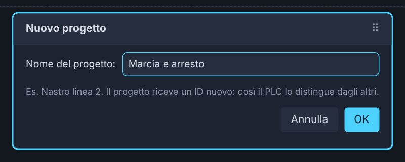
2 · I simboli
Un simbolo è il nome di un indirizzo: nel ladder vedrai "Start" sopra I0. Premi 🏷 Simboli,
poi + Aggiungi per ogni riga della tabella qui sopra: operando, nome e commento. ← Torna al ladder per tornare al programma.
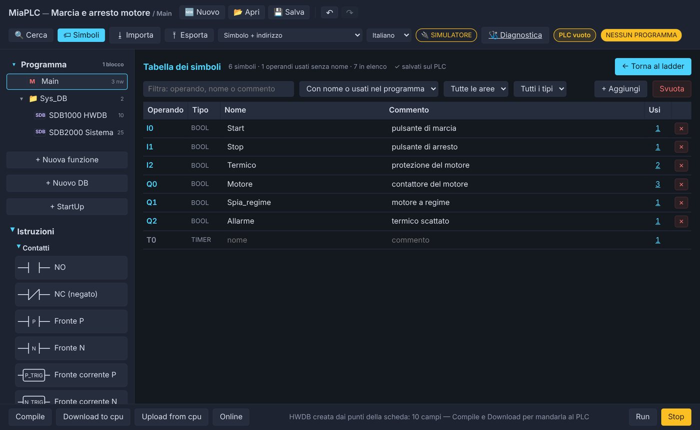
3 · Il primo contatto
Dalla colonna Istruzioni → Contatti trascina NO sulla zona tratteggiata del network. Il contatto compare con un ?:
non ha ancora un indirizzo.
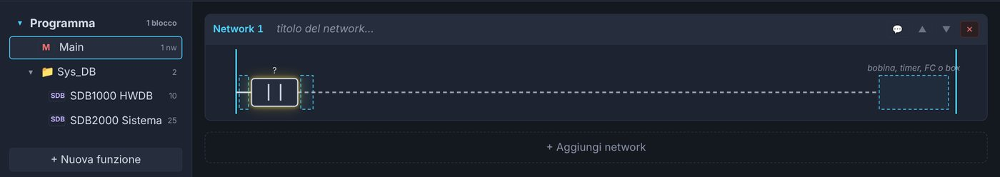
Clicca il contatto: nella finestra Configura contatto scegli l'area I (ingresso) e l'indice 0, oppure scrivi
Start nel campo Simbolo. OK.
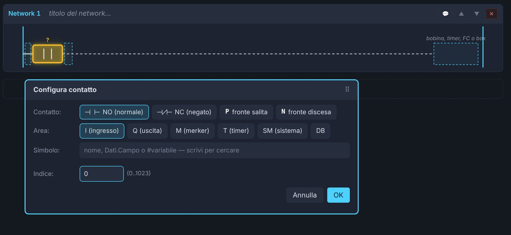
4 · Stop, termico e motore
- Trascina un contatto NC (negato) sulla zona subito a destra di Start e dagli
I1(Stop). - Un altro NC dopo Stop, con
I2(Termico). - Dalla sezione Bobine trascina Bobina nella zona a destra, «bobina, timer, FC o box», e dagli
Q0(Motore).
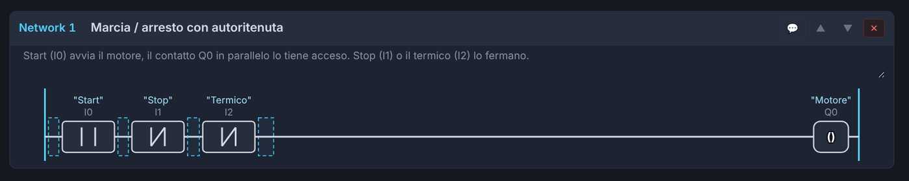
Così il motore resta acceso solo finché tieni premuto Start. Serve l'autoritenuta.
5 · L'autoritenuta (ramo parallelo)
Il contatto del motore, in parallelo a Start, tiene acceso il motore quando lasci il pulsante.
- Tasto destro sul contatto Start → ⤵ Ramo parallelo (OR) da qui.
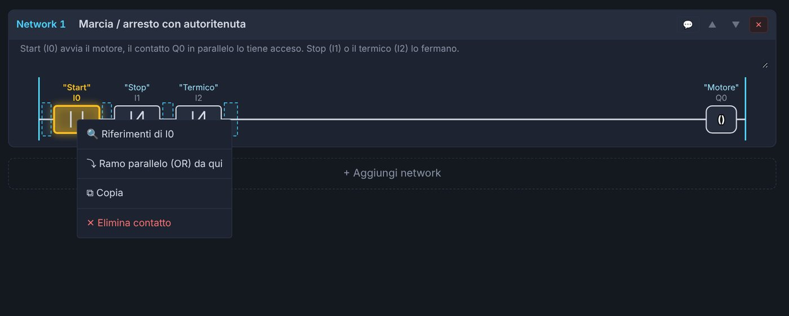
- Sotto Start compare un ramo aperto con un segnaposto
?e una freccia. - Trascina un contatto NO sul
?e dagliQ0(Motore). Dalla tastiera: seleziona il?e premi A. - Trascina la freccia sulla linea, subito dopo Start: il ramo si chiude lì. In alternativa: tasto destro sulla freccia.
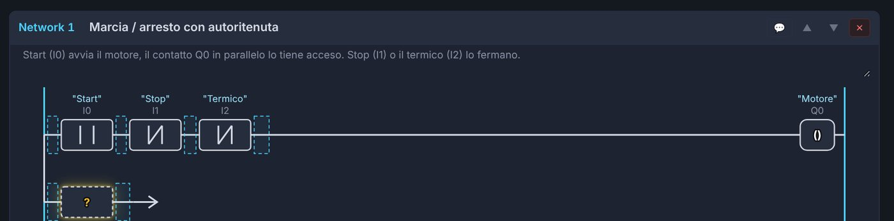
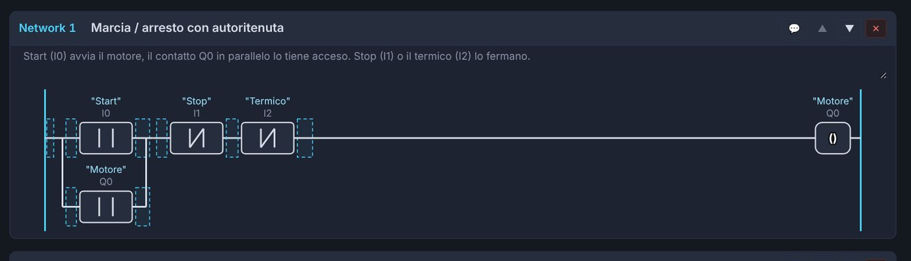
6 · Spia a regime e allarme
Premi + Aggiungi network sotto il network 1.
| Network | Cosa trascinare | Indirizzi |
|---|---|---|
| 2 · Spia «a regime» | contatto NO, poi dalla sezione Timer un TON, poi una bobina | contatto Q0; timer T0 con tempo 3s; bobina Q1 |
| 3 · Allarme termico | contatto NO e bobina | contatto I2; bobina Q2 |
Il TON (ritardo all'eccitazione) chiude la sua uscita quando la corrente gli arriva da almeno il tempo impostato: 3 secondi dopo la partenza del motore si accende la spia. Le altre istruzioni con le immagini sono nella wiki.
7 · Download e RUN
Premi Download to cpu: l'editor compila da solo e mostra cosa manda. Conferma con Download, poi alla domanda
successiva rispondi RUN. Se c'è un errore (un ? rimasto, un ramo aperto) la riga in basso dice quale network correggere.
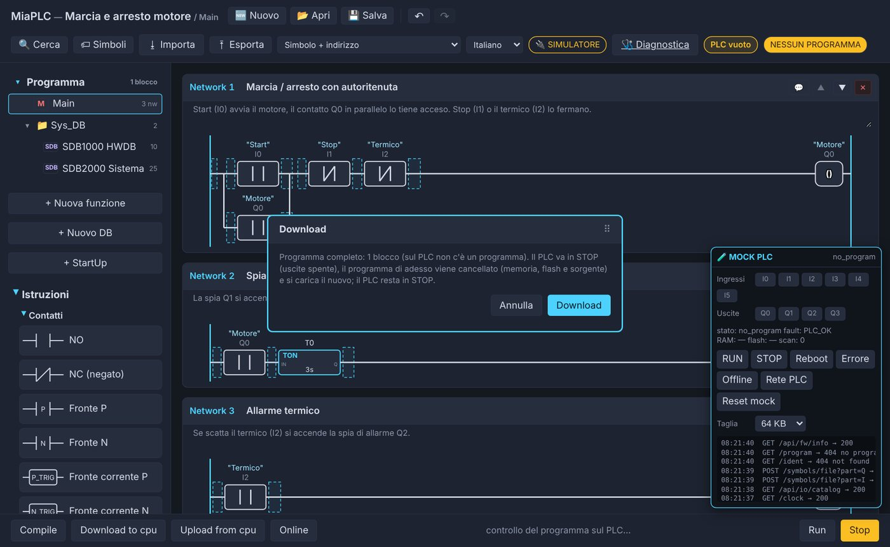
8 · Online e prova
Premi Online: i contatti chiusi e le bobine eccitate diventano verdi, il timer mostra il tempo che passa.
Nel riquadro MOCK PLC in basso a destra clicca I0 (Start) per premerlo e di nuovo per rilasciarlo:
Q0resta acceso grazie all'autoritenuta;- dopo 3 s si accende
Q1; - clicca
I1(Stop) oI2(termico): il motore si ferma; conI2si accende ancheQ2.
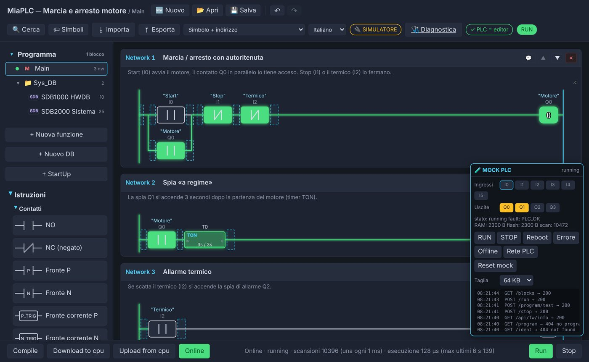
Se modifichi il programma mentre sei Online, il blocco modificato esce da Online (in alto compare ≠ PLC) finché non fai di nuovo il Download.
9 · Salva
💾 Salva scarica il progetto come file .miaplc: programma, simboli e DB. Lo riapri con 📂 Apri, nel simulatore
o nell'editor della scheda. L'editor tiene anche una bozza nel browser: se chiudi la pagina per sbaglio, la ritrovi alla riapertura.
Semaforo
Tre timer in cascata fanno il ciclo verde 5 s, giallo 2 s, rosso 4 s; a semaforo spento il giallo lampeggia. Apri l'esempio finito.
Simboli: I0 Abilita, Q0 Verde, Q1 Giallo, Q2 Rosso. Poi sei network:
| Network | Contenuto | Perché |
|---|---|---|
| 1 · Tempo del verde | NO I0 → NC T2 → TON T0 5s | alla fine del rosso, T2 riavvia tutto il ciclo |
| 2 · Tempo del giallo | NO T0 → TON T1 2s | parte quando il verde è finito |
| 3 · Tempo del rosso | NO T1 → TON T2 4s | parte quando il giallo è finito |
| 4 · Luce verde | NO I0 → NC T0 → bobina Q0 | verde finché T0 non ha finito |
| 5 · Luce gialla | ramo 1: NO I0, NO T0, NC T1; ramo 2: NC I0, NO SM5 → bobina Q1 |
fissa nella sua fase, lampeggiante a 1 Hz con il semaforo spento |
| 6 · Luce rossa | NO I0 → NO T1 → bobina Q2 | rossa da fine giallo a fine rosso |
Il timer va nel network come un contatto: trascinalo dalla sezione Timer e clicca il box per scegliere il numero (T0, T1, T2) e il tempo.
Il contatto T0 è l'uscita del timer 0. SM5 è un bit di sistema che lampeggia a 1 Hz da solo.
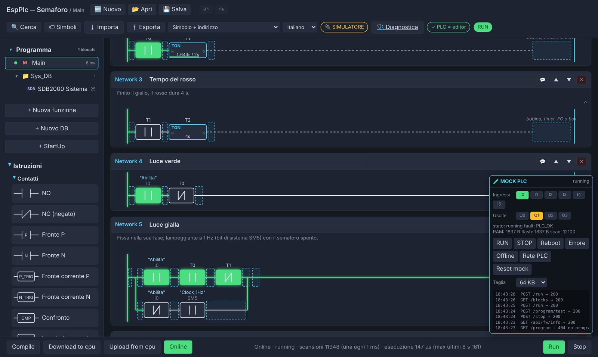
La canzoncina dei relè
Un esempio avanzato: un sequencer a passi che batte un ritmo su Q0 e Q1. Più che rifarlo da zero conviene
aprirlo e studiarlo network per network:
ogni network ha il suo commento.
- Main chiama solo la funzione FC10 «Canzoncina»: il programma vero sta lì. Nell'albero dei blocchi clicca FC10 per aprirla.
- StartUp rimette a zero il passo dopo un Download o un RUN, con dei box MOVE.
- La DB1 «Merker» contiene le parole di lavoro: passo, battuta, spartito.
- Nella FC10, timer che si riarmano da soli danno il tempo di ogni parte (75, 70 e 95 ms per passo); un impulso a ogni passo fa avanzare il contatore con ADD.
- DIV e MOD calcolano battuta e posizione; lo «spartito» è una parola di 16 bit per battuta, un bit per passo; i confronti scelgono la parte in base al numero del passo.
- Le ultime due bobine accendono i relè per 45 ms a ogni colpo.
M30 = 1fa silenzio,I0ricomincia da capo.
Per creare una FC: + Nuova funzione; per chiamarla, trascinala dall'albero dei blocchi in un network del Main. Per una DB: + Nuovo DB e aggiungi i campi.
E adesso?
Gli stessi progetti girano sulla scheda vera. Il manuale dell'hardware spiega come preparare un ESP32 con MiaConfig, collegare pulsanti e LED e caricare l'esempio.